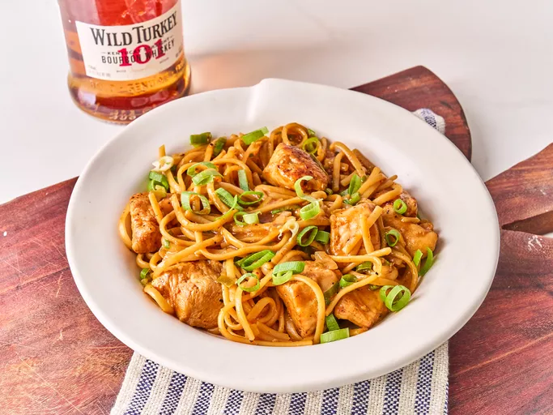

Home
One Pan Tipsy Chicken and Noodles

For this one pan tipsy chicken and noodle recipe, the pasta is cooked right in the skillet in a bourbon flavored sauce — one of the best and easiest dinners I've made in a long time.
Ingredients
- 1 ¼ pounds boneless chicken breasts or tenders, cut into 1-inch pieces
- 1/2 teaspoon garlic powder
- 1/2 teaspoon paprika
- 1 ½ teaspoons kosher salt, plus more to taste
- 1/2 teaspoon freshly ground black pepper
- 1 ¾ cups chicken stock or water, plus more as needed
- 1/4 cup bourbon
- 3 tablespoons soy sauce
- 2 tablespoons ketchup
- 1/2 teaspoon ground ginger
- 2 cloves garlic, minced
- 1 tablespoon neutral oil
- 2 tablespoons butter
- 4 green onions, sliced, whites and green parts separated
- 1/4 teaspoon crushed red pepper
- 8 ounces linguine pasta
Directions
- Season chicken with garlic powder, paprika, salt and pepper and toss well to coat. Whisk together stock, bourbon, soy sauce, ketchup and ginger and set aside.
- Heat 1 tablespoon oil in a large deep skillet over medium-high heat. Add chicken and cook, stirring occasionally, until browned on all sides (chicken will not be cooked through at this point). Remove chicken from skillet and set aside.
- Add butter to skillet and melt over medium-high heat. Add the white parts of the green onions and garlic and cook, stirring constantly, 1 minute. Add crushed red pepper and pasta and stir to coat in butter mixture. Pour in reserved bourbon mixture and stir until everything is well incorporated, scraping any browned bits from the bottom of the skillet. Bring mixture to a boil and reduce to simmer, stirring often to keep the noodles from sticking.
- Add chicken and any accumulated juices into the skillet. Stir and cook, stirring occasionally, until pasta is cooked and sauce has thickened, 10 to 12 minutes. Add additional stock or water as needed to keep the mixture saucy until pasta is cooked. Season to taste with salt. Stir in green
onions and serve immediately.